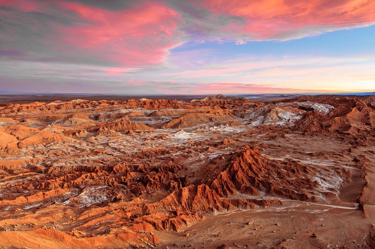

The Atacama Desert
Chile’s Martian Landscape
Because the Atacama looks exactly like the surface of Mars, it is a top location for Hollywood movies and NASA testing. Its vast, orange-hued dunes and salt-crusted craters provide an otherworldly backdrop for filmmakers.
It has been the filming location for movies like Quantum of Solace (James Bond) and The 33.